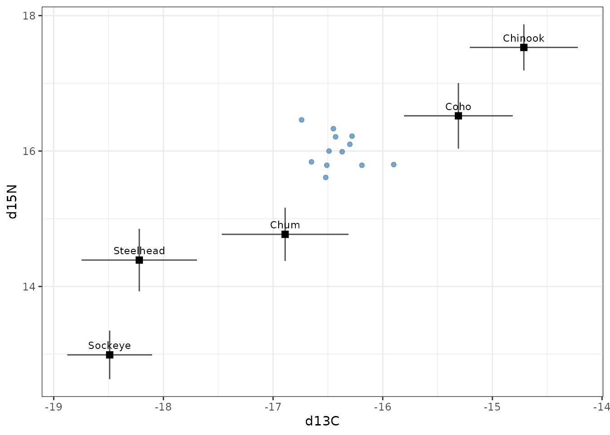
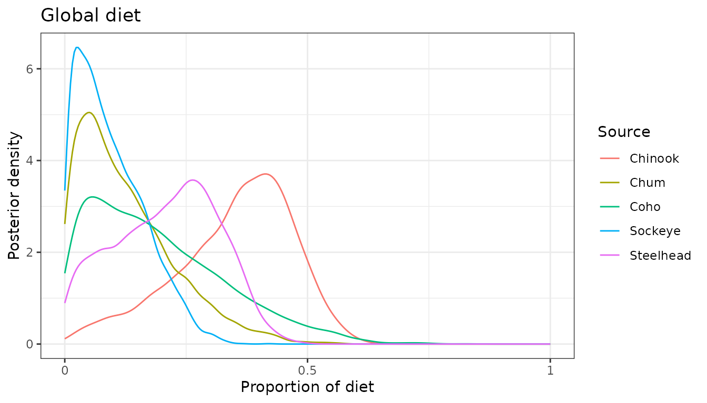
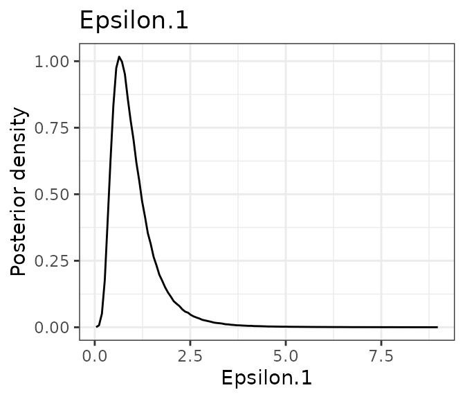
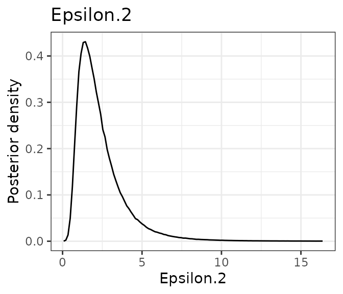
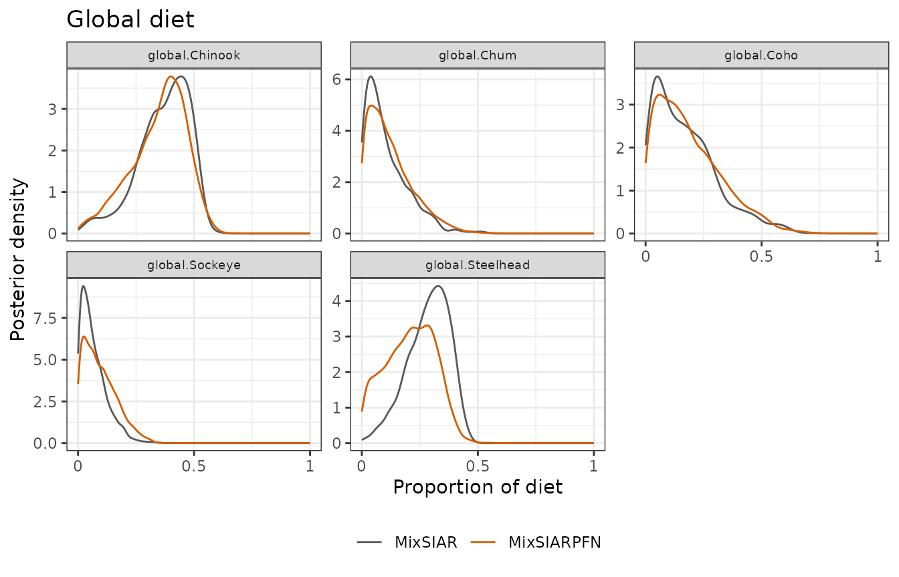
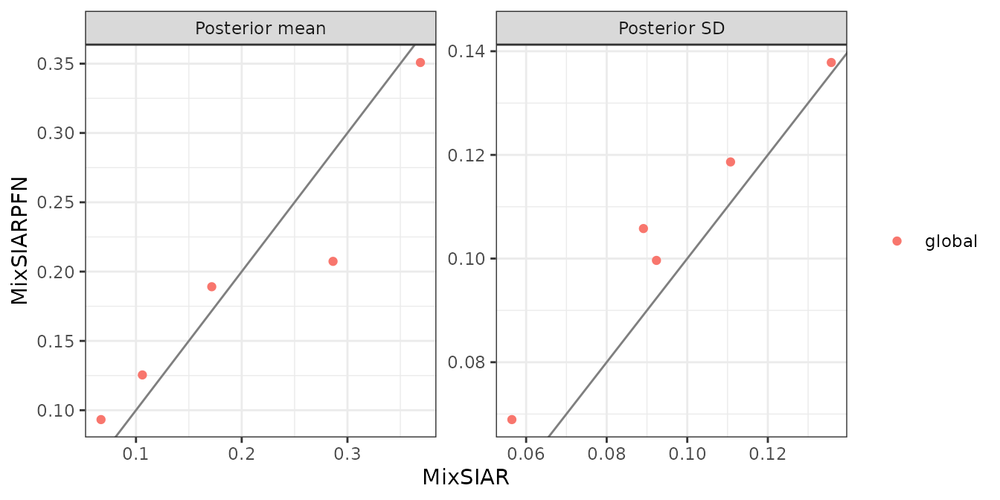

This follows MixSIAR’s killer whale example (Semmens et al. 2013
data, as analysed in Stock et al. 2018): 12 killer whales, two tracers
(δ¹³C and δ¹⁵N) and five salmon prey sources, with no random, fixed or
continuous effects. It is the simplest MixSIAR model, and a good first
check. Only the fitting call differs from MixSIAR’s vignette:
run_pfn() in place of write_JAGS_model() and
run_model().
The data
mix <- load_mix_data(
filename = system.file("extdata", "killerwhale_consumer.csv", package = "MixSIARPFN"),
iso_names = c("d13C", "d15N"), factors = NULL, fac_random = NULL,
fac_nested = NULL, cont_effects = NULL)
source <- load_source_data(
filename = system.file("extdata", "killerwhale_sources.csv", package = "MixSIARPFN"),
source_factors = NULL, conc_dep = FALSE, data_type = "means", mix)
discr <- load_discr_data(
filename = system.file("extdata", "killerwhale_discrimination.csv", package = "MixSIARPFN"),
mix)
mix
#> Consumer data: 12 consumers, 2 tracer(s): d13C, d15N
source
#> Source data: 5 sources: Chinook, Chum, Coho, Sockeye, Steelhead
plot_data(mix = mix, source = source, discr = discr)
#> `height` was translated to `width`.
Fitting the model
Residual * Process error and MixSIAR’s uninformative Dirichlet prior
(all alpha.prior equal to 1), as in MixSIAR’s vignette. The
network for this error structure is downloaded the first time it is
needed (about 36 MB) and cached.
time <- system.time(
fit <- run_pfn(mix, source, discr, alpha.prior = 1,
resid_err = TRUE, process_err = TRUE)
)
fit
#> MixSIARPFN fit (Residual * Process error), 5 sources, in 0.2 s
#> Marginal posteriors (no joint draws). Global diet:
#> source mean sd 2.5% 97.5%
#> Chinook 0.351 0.119 0.075 0.535
#> Chum 0.125 0.100 0.004 0.370
#> Coho 0.189 0.138 0.008 0.510
#> Sockeye 0.093 0.069 0.003 0.252
#> Steelhead 0.207 0.106 0.015 0.393
#> Use output_pfn() for every proportion and parameter.The fit took 0.2 seconds.
Results
out <- output_pfn(fit, mix, source,
output_options = list(summary_save = FALSE, plot_post_save_pdf = FALSE))
knitr::kable(round(summary_table(fit), 3))| Mean | SD | 2.5% | 5% | 25% | 50% | 75% | 95% | 97.5% | |
|---|---|---|---|---|---|---|---|---|---|
| Epsilon.1 | 1.056 | 0.763 | 0.323 | 0.380 | 0.620 | 0.879 | 1.270 | 2.254 | 2.769 |
| Epsilon.2 | 2.392 | 1.639 | 0.684 | 0.808 | 1.352 | 1.974 | 2.922 | 5.321 | 6.576 |
| p.global.Chinook | 0.351 | 0.119 | 0.075 | 0.119 | 0.280 | 0.371 | 0.437 | 0.513 | 0.535 |
| p.global.Chum | 0.125 | 0.100 | 0.004 | 0.009 | 0.047 | 0.102 | 0.181 | 0.322 | 0.370 |
| p.global.Coho | 0.189 | 0.138 | 0.008 | 0.016 | 0.078 | 0.161 | 0.274 | 0.455 | 0.510 |
| p.global.Sockeye | 0.093 | 0.069 | 0.003 | 0.007 | 0.037 | 0.080 | 0.137 | 0.224 | 0.252 |
| p.global.Steelhead | 0.207 | 0.106 | 0.015 | 0.029 | 0.124 | 0.215 | 0.290 | 0.370 | 0.393 |
out$plots$global
out$plots$Epsilon.1
out$plots$Epsilon.2

Each is a marginal posterior: the network does not give joint draws, so the marginal means need not sum to exactly 1, and sums or ratios of proportions cannot be computed from the output.
Comparison with MixSIAR
ref <- mixsiar_reference("killerwhale")
cmp <- compare_mixsiar(fit, ref$draws, ref$summary)MixSIAR 3.1.12 fitted the same model with 3 chains of 1,000,000 iterations (burn-in 500,000), which took about 23 minutes (largest Gelman-Rubin diagnostic 1.005). MixSIARPFN took 0.2 seconds.
Means, SDs, 95% intervals and the Wasserstein-1 distance (W1: how far, on average, one posterior’s mass has to move to match the other, on the proportion scale; the residual multipliers’ draws were not saved, so they have no W1):
knitr::kable(data.frame(
quantity = cmp$name,
`MixSIARPFN mean` = round(cmp$pfn_mean, 3), `MixSIAR mean` = round(cmp$mixsiar_mean, 3),
`MixSIARPFN SD` = round(cmp$pfn_sd, 3), `MixSIAR SD` = round(cmp$mixsiar_sd, 3),
`MixSIARPFN 95% CI` = sprintf("%.2f to %.2f", cmp$pfn_q2.5, cmp$pfn_q97.5),
`MixSIAR 95% CI` = sprintf("%.2f to %.2f", cmp$mixsiar_q2.5, cmp$mixsiar_q97.5),
W1 = round(cmp$w1, 3), check.names = FALSE))| quantity | MixSIARPFN mean | MixSIAR mean | MixSIARPFN SD | MixSIAR SD | MixSIARPFN 95% CI | MixSIAR 95% CI | W1 |
|---|---|---|---|---|---|---|---|
| Epsilon.1 | 1.056 | 1.082 | 0.763 | 0.802 | 0.32 to 2.77 | 0.33 to 3.10 | NA |
| Epsilon.2 | 2.392 | 2.585 | 1.639 | 1.997 | 0.68 to 6.58 | 0.72 to 8.28 | NA |
| p.global.Chinook | 0.351 | 0.369 | 0.119 | 0.111 | 0.08 to 0.54 | 0.09 to 0.52 | 0.019 |
| p.global.Chum | 0.125 | 0.106 | 0.100 | 0.092 | 0.00 to 0.37 | 0.00 to 0.32 | 0.020 |
| p.global.Coho | 0.189 | 0.172 | 0.138 | 0.136 | 0.01 to 0.51 | 0.01 to 0.51 | 0.018 |
| p.global.Sockeye | 0.093 | 0.067 | 0.069 | 0.056 | 0.00 to 0.25 | 0.00 to 0.20 | 0.026 |
| p.global.Steelhead | 0.207 | 0.286 | 0.106 | 0.089 | 0.01 to 0.39 | 0.08 to 0.43 | 0.079 |
plot_compare(fit, ref$draws, block = "global")
plot_compare(fit, ref$draws, type = "means")
What this shows. The two posteriors are close. MixSIARPFN’s means differ from MixSIAR’s by 0.03 on average (MixSIAR’s posterior SDs are about 0.10), and its SDs are about the same (median SD ratio 1.08). The largest difference is for Steelhead (0.21 against 0.29).